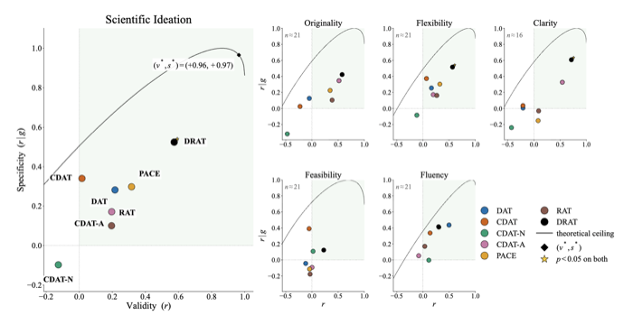
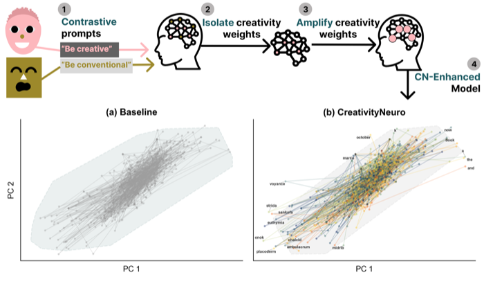
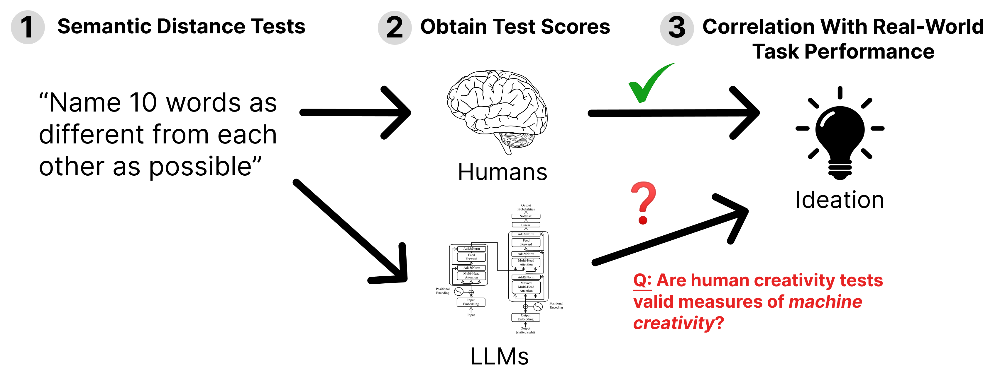
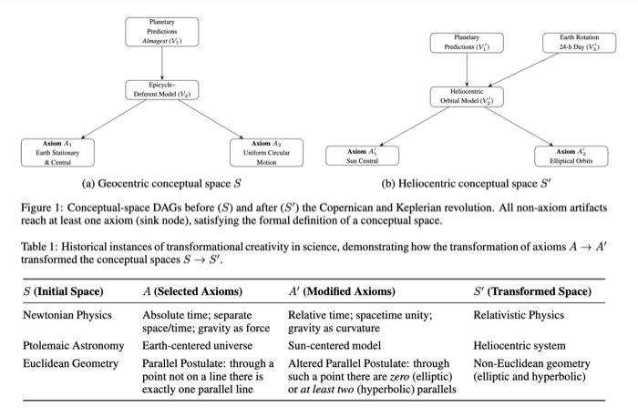
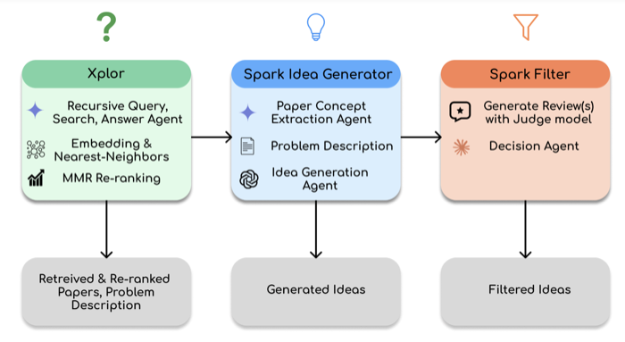

About
I am an interdisciplinary scholar studying the science of intelligence and the creativity of AI systems. I'm interested in uncovering the fundamental, scientific principles of creativity governing minds and machines, and in developing AI methods and systems that exhibit creative behavior.
Previously, I was a visiting graduate researcher at the Simons Institute for the Theory of Computing, Berkeley, and did my undergrad at the University of Illinois, Urbana-Champaign, where I studied theoretical computer science.
Recent News
-
Launched the Creative AI Index, a community benchmark for AI creativity.
-
Received the Lambda AI Research Grant.
-
Best Short Paper Award at ICCC 2025 for Transformational Creativity in Science: A Graphical Theory.
-
Started as a visiting graduate researcher at the Simons Institute, UC Berkeley.
-
Pivoted from ML theory to cognitive science.
Selected Publications
2026


CreativityNeuro: Steering Large Language Model Weights to Improve Divergent Thinking
Under review, Third Conference on Language Modeling (COLM)

Do Semantic Distance Tests Actually Predict Creativity in Large Language Models?
Under review, 40th Conference on Neural Information Processing Systems (NeurIPS)
2025

Transformational Creativity in Science: A Graphical Theory
Proceedings of the 16th International Conference on Computational Creativity (ICCC) — Best Short Paper Award

Spark: A System for Scientifically Creative Idea Generation
Proceedings of the 16th International Conference on Computational Creativity (ICCC)
2024
Undergraduate thesis, University of Illinois, Urbana-Champaign